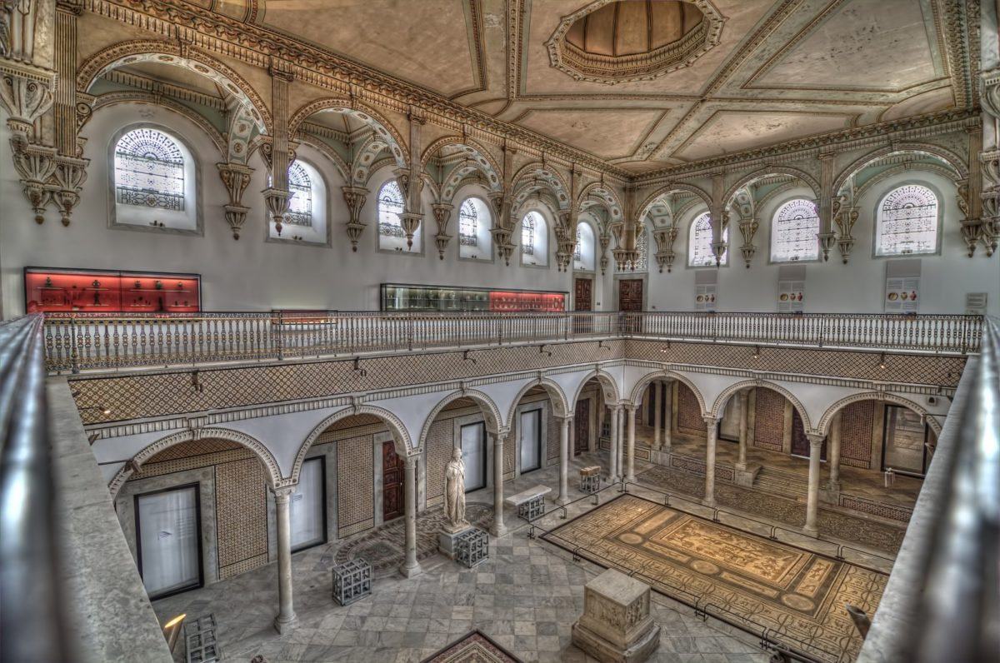
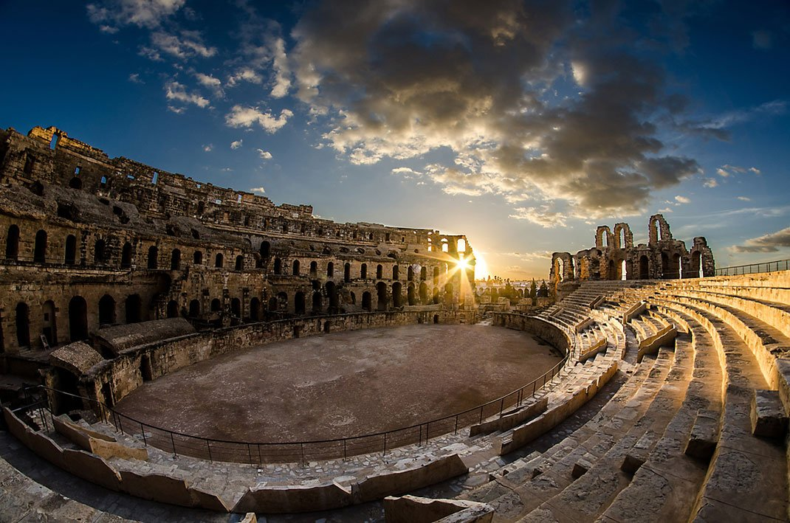
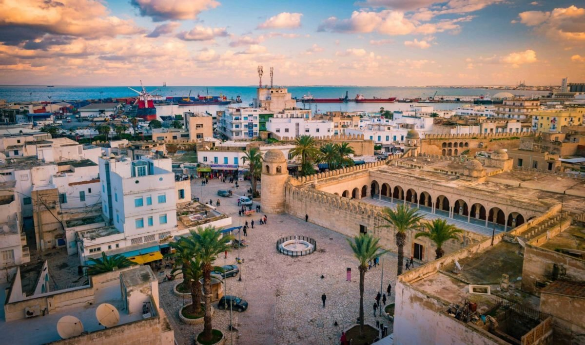

Le musée national du Bardo est un musée de Tunis, situé dans la banlieue du Bardo. C’est l’un des plus importants musées du bassin méditerranéen et le second musée du continent africain après le musée égyptien du Caire par la richesse de ses collections. Il retrace l’histoire de la Tunisie sur plusieurs millénaires et à travers plusieurs civilisations par le biais d’une large variété de pièces archéologiques

Dans la petite bourgade d’El Jem s’élèvent les ruines impressionnantes du plus grand colisée d’Afrique du Nord, immense amphithéâtre où pouvaient prendre place 35 000 spectateurs. Cette construction du IIIe siècle illustre l’extension et la grandeur de l’Empire romain. Ce « Grand amphithéâtre », le monument romain le plus célèbre de la Tunisie, il a fait l’objet d’un classement au patrimoine mondial de l’Unesco en 1979.

La médina de Tunis est une médina tunisienne, cœur historique de Tunis, considérée comme une des villes arabo-musulmanes les mieux conservées et inscrite depuis 1979 au patrimoine mondial de l’Unesco. Elle fût l’une des villes les plus importantes et les plus riches du monde islamique. Quelque 700 monuments dont des palais, des mosquées, des mausolées, des medersa et des fontaines témoignent de ce remarquable passé.

La Grande Mosquée de Sousse est la principale mosquée de la ville tunisienne de Sousse. Située à l’entrée de la médina, elle est érigée par le souverain aghlabide Aboul Abbas Ier , soit près de trente ans après la construction du ribat de Sousse.